История Мелвуда
 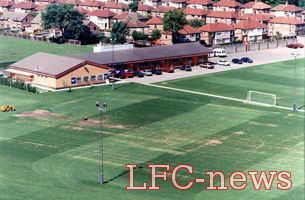
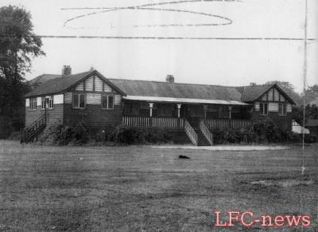
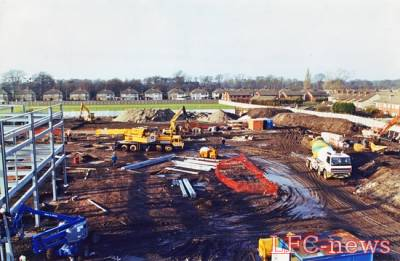
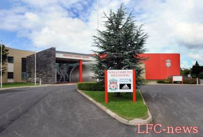
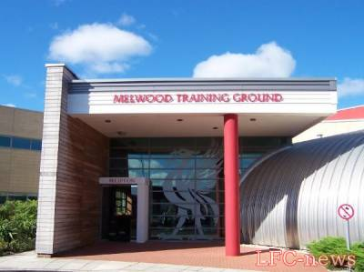
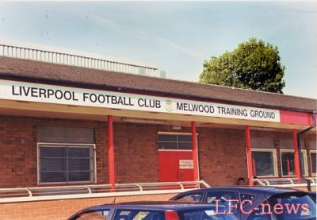
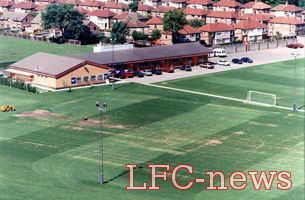
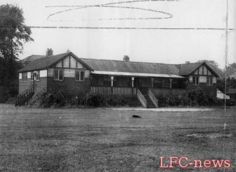
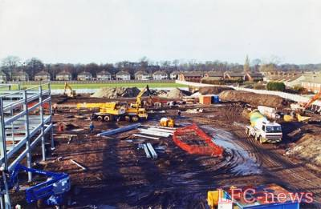
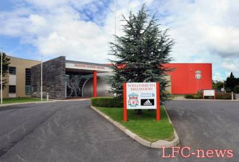
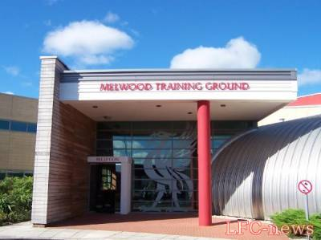
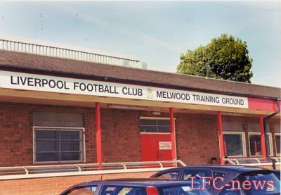
Мелвуд / Melwood — тренировочная база футбольного клуба «Ливерпуль», расположенная в пригороде Ливерпуля Западный Дерби. Мелвуд не связан напрямую с Академией клуба, которая находится в Кёрби.
Мелвуд является базой «Ливерпуля» с пятидесятых годов. Поле раньше принадлежало местной школе святого Франциска Ксаверия. Площадка использовалась для занятия игровыми видами спорта, и святые отцы Меллинг и Вудлок, преподававшие в школе, учили мальчиков играть в футбол. В память об этих священниках и их труде поле получило название по первым слогам их имён[1].
В 1959 году, когда Билл Шенкли возглавил «Ливерпуль», Мелвуд находился в ужасающем состоянии. Именно под руководством шотландского тренера была произведена модернизация, которая позволила стать базе одной из самых передовых в Англии. Здесь он представил свою систему тренировок, на которых футболисты играли пять на пять, чтобы усвоить главный принцип Шенкли — «Отдавай пас и Двигайся» (англ. Pass and Move).
Традиционно игроки встречались и переодевались на Энфилде и садились в клубный автобус, который отвозил их в Мелвуд. После тренировки автобус отвозил их назад на Энфилд, где они принимали душ, переодевались и перекусывали. Таким образом Шенкли мог быть уверен, что его игроки правильно «охладили» мышцы, и имел возможность уберечь их от травм. Возможно, именно этот приём позволил «Ливерпулю» стать чемпионом в сезоне 1965/1966 годов, использовав по ходу сезона лишь 14 игроков, двое из которых провели всего по паре матчей.
В январе 2001 года «Ливерпуль» начал работы по возведению Павильона Тысячелетия — современного комплекса для игроков и тренеров, разработанного при участии Жерара Улье. Французский специалист выступил также главным вдохновителем этого проекта.
В Мелвуде имеется крытое пространство для приглашённых наблюдателей. Тренировки начинаются рано утром. Игроки должны прибыть примерно к 9 утра. Вторая часть тренировок проводится вечером.
Оснащение базы
- Зал для пресс-конференций и встреч
Этот зал используется главным тренером для проведения пресс-конференций. Также здесь проходят встречи тренерского штаба и игроков, на которых они готовятся к матчам.
- Раздевалки
- Зона реабилитации
- Медицинский кабинет
Здесь находится сканирующий аппарат для внимательного изучения травм, полученных игроками в играх и на тренировках.
- Поля с искусственным покрытием
- Тренировочные поля
В Мелвуде есть несколько полноразмерных полей, а также поле, которое может использоваться при любой погоде.
- Гимнастический зал
- Плавательный бассейн
У каждого игрока есть персональный ключ-карта, на которой хранится персональная информация. Имеется также комната, в которой занижено содержание кислорода, она используется, в основном, для реабилитации, поскольку такие условия позволяют игрокам быстрее восстанавливаться, имитируя тренировки высоко в горах.
- Зона отдыха
- Ресторан
- Зона раздачи автографов
- Комната тактической подготовки